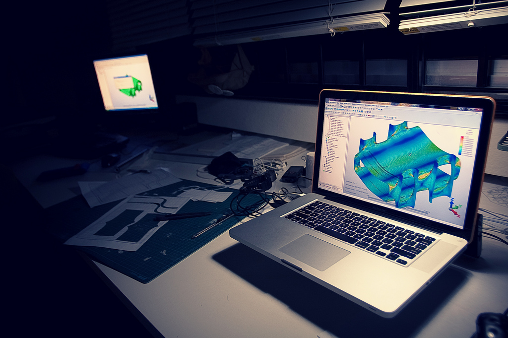

Soy de Bogotá, tengo 34 años, Ingeniero mecánico de la Universidad Nacional, me gustan los temas relacionados con nuevas tecnologías en todos los campos, actualmente me ocupo emprendiendo en mi propia empresa que presta servicios de consultoría en ingeniería, apunto a integrar las tecnologías TIC como diferenciador de todos los servicios que presto.
En esta imagen se observa una aplicación de la ingeniería asistida por computador, parte integral de tecnologías disruptivas como la realidad virtual y aumentada asi como la impresión 3D.